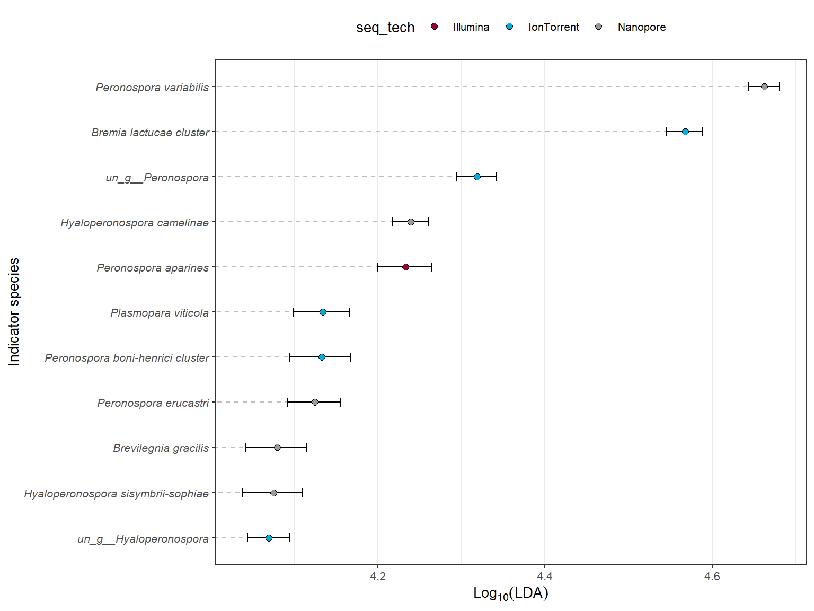

LEfSe analysis can be use to determine which species might explain the differences between groups. This approach uses a non-parametric Kruskal–Wallis test to detect species with significant differential abundance relative to the groups. Then, biological significance is tested using pairwise Wilcoxon’s rank-sum tests, with the Benjamini–Hochberg correction to control the false discovery rate (FDR). In the final step, a linear discriminant analysis (LDA) is used to estimate the effect size of each differentially abundant feature.
library("coin")
library("stringr")
library("ggtree") # BiocManager::install("ggtree")
library("ggtreeExtra") #install.packages("ggExtra")
library("MicrobiotaProcess")
library("tidyverse")
WorkingPS<-readRDS("Processed_data/WorkingPS.rds")
set.seed(1024)
oom_diff_res <- diff_analysis(obj = WorkingPS,
classgroup = "seq_tech",
mlfun = "lda",
ratio=0.80,
filtermod = "pvalue",
firstcomfun = "kruskal.test",
padjust = "fdr", #“holm”, “hochberg”, “hommel”, “bonferroni”, “BH”, “BY”, “fdr”, “none”
firstalpha = 0.05,
strictmod = TRUE,
secondcomfun = "wilcox_test",
clmin = 10,
subclmin = 5,
subclwilc = TRUE,
ldascore = 4,
secondalpha = 0.01,
lda = 4,
normalization = 1e+06,
bootnums=99,
ci=0.95,
type = "species")
oom_ana_results <- oom_diff_res@result
oom_ana_results[c('order', 'Species')] <- str_split_fixed(oom_ana_results$f, '__', 2)
oom_ana_results_S <- subset(oom_ana_results, order == 's')
head(oom_ana_results_S)## f LDAupper LDAmean LDAlower seq_tech
## 1 s__Plasmopara viticola 4.166827 4.134217 4.098958 IonTorrent
## 2 s__Hyaloperonospora sisymbrii-sophiae 4.109395 4.075094 4.037850 Nanopore
## 4 s__Brevilegnia gracilis 4.114551 4.079879 4.042196 Nanopore
## 5 s__un_g__Peronospora 4.341739 4.318472 4.293887 IonTorrent
## 6 s__Peronospora boni-henrici cluster 4.167613 4.132625 4.094570 IonTorrent
## 11 s__Hyaloperonospora camelinae 4.260718 4.239672 4.217554 Nanopore
## pvalue fdr order Species
## 1 1.709812e-38 2.274050e-36 s Plasmopara viticola
## 2 1.158482e-35 7.703905e-34 s Hyaloperonospora sisymbrii-sophiae
## 4 1.984491e-30 5.278746e-29 s Brevilegnia gracilis
## 5 1.088230e-28 2.412243e-27 s un_g__Peronospora
## 6 3.219376e-26 6.116814e-25 s Peronospora boni-henrici cluster
## 11 4.483981e-17 4.259782e-16 s Hyaloperonospora camelinaeggplot(oom_ana_results_S,
aes(x=LDAmean, y=reorder(Species, LDAmean)))+
geom_segment(aes(yend=Species), xend=0, colour= "grey",
linetype="dashed")+
geom_errorbarh(aes(xmin=oom_ana_results_S$LDAlower,
xmax=oom_ana_results_S$LDAupper,
height = .2))+
geom_point(size=2, shape=21, aes(fill=seq_tech))+
scale_fill_manual(values=c("#990038",
"#01AED9",
"#999999"))+
theme_bw(base_size = 10)+
theme(panel.grid.major.y = element_blank())+
theme(legend.position="top")+
xlab(bquote(Log[10](LDA)))+
ylab("Indicator species")+
theme(axis.text.y = element_text(face = "italic"))
diffclade_p <- ggdiffclade(
obj=oom_diff_res,
alpha=0.03,
linewd=0.15,
skpointsize=0.6,
layout="radial",
taxlevel=7,
removeUnkown=FALSE
) +
scale_fill_manual(
values=c("#990038",
"#01AED9",
"#999999")
) +
guides(color = guide_legend(
keywidth = 0.1,
keyheight = 0.6,
order = 3,
ncol=1)
) +
theme(
panel.background=element_rect(fill=NA),
legend.position="right",
plot.margin=margin(0,0,0,0),
legend.spacing.y=unit(0.02, "cm"),
legend.title=element_text(size=7),
legend.text=element_text(size=6),
legend.box.spacing=unit(0.02,"cm")
)
diffclade_p